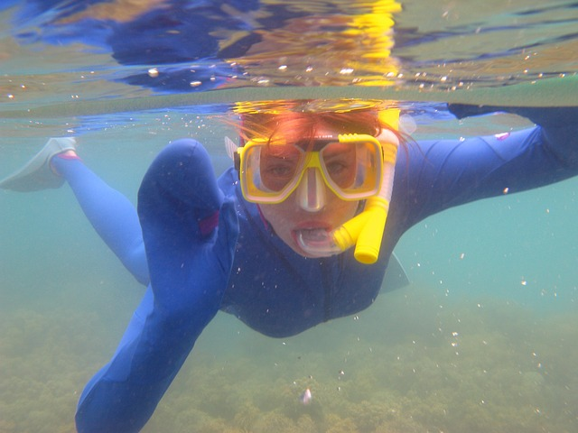

Visit San Joaquin, Iloilo
Nestled at the southernmost tip of Iloilo, San Joaquin is a charming coastal town known for its rich cultural heritage and picturesque landscapes.
Famous for its historic San Joaquin Church, adorned with intricate bas-reliefs, and the annual Pasungay festival showcasing traditional bullfighting, this town offers a unique blend of history, tradition, and natural beauty.
With its warm, welcoming community and scenic coastal views, San Joaquin stands as a testament to the enduring spirit and vibrant culture of Iloilo
Top 3 activities to do in San Joaquin
Beach Hopping and Swimming
Visit the beautiful beaches of San Joaquin to enjoy the sun, sand, and sea. Perfect for swimming, sunbathing, and picnicking.
Diving and Snorkeling
Explore the underwater world by diving or snorkeling at Coral Garden Marine Sanctuary. Discover colorful corals and diverse marine life.
Hiking and Nature Trips

Enjoy hiking and nature trips to Mount Manaphag or Siraan Hot Spring. Experience scenic views, natural springs, and the fresh countryside air.

I'm your guide, NeNo!
"I have lived in San Joaquin for over 32 years, and I can show you all the beautiful and historic places around our lovely town."